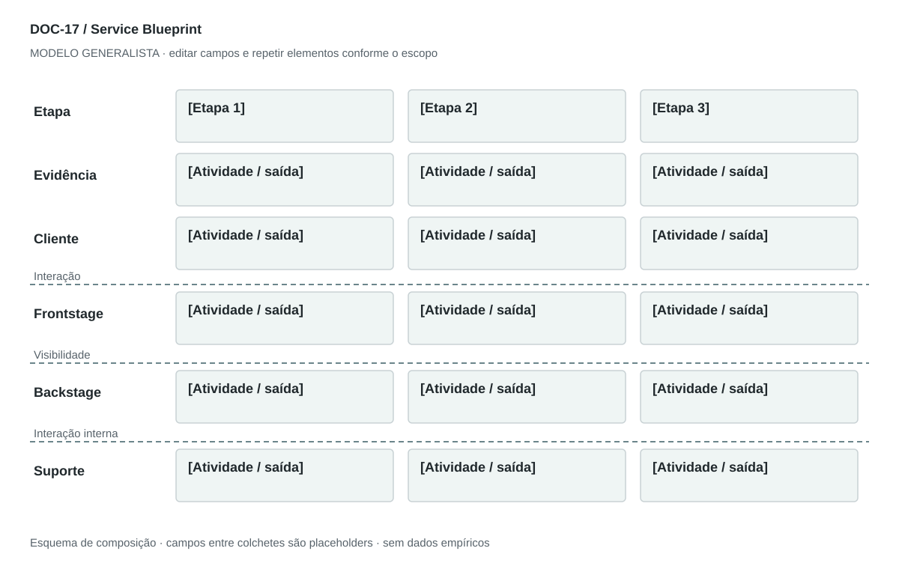

DOC-17 / Biblioteca documental generalista
Service Blueprint
Ligar a experiência do cliente às atividades visíveis, bastidores, suporte e evidências da prestação.
Modelo de investigação. Não representa uma análise concluída. Campos vazios devem permanecer identificados; não inventar dados para completar figuras.
Estrutura editorial
Uma prancha paisagem de raias alinhadas às etapas + 2 páginas de explicação. Linhas de interação, visibilidade e interação interna precisam de legenda.
Visual previsto

Colunas de etapas; raias de evidência, cliente, frontstage, backstage e suporte. Interação separa cliente/frontstage; visibilidade separa frontstage/backstage; interação interna separa backstage/suporte.
Imagens: Diagrama vetorial de raias obrigatório. Fotografias de evidências de serviço são opcionais e devem representar pontos reais; não chamar processo invisível de visível.
Dicionário de dados
| Campo | Tipo | Dado necessário |
|---|
| etapa_id | referencia | Chave compartilhada com a jornada |
| evidencia_servico | texto | Elemento perceptível que demonstra a prestação |
| acao_cliente | texto | Ação da pessoa na etapa |
| frontstage | texto | Atividade visível ao cliente |
| backstage | texto | Atividade fora de sua percepção |
| suporte | texto | Recurso ou processo habilitador |
| responsavel | referencia | Papel responsável pelo handoff |
| espera | texto | Tempo observado ou hipótese com unidade |
| falha | texto | Modo de falha e contingência |
Todos os registros precisam de classificação, fonte, localização, datas, confiança e limitação. Números também precisam de unidade, moeda quando aplicável e período.
Modelo preenchível
Os quadros amarelos podem ser editados nesta página para impressão. Edições não são gravadas automaticamente: use o Markdown/JSON para manter uma versão ou imprima em PDF após editar.
[Negócio] · [Versão] · [Data-base] · [Autor] · [Audiência] · [Território]
Pergunta decisória: [A preencher]
Escopo: [A preencher]
1. Recorte do serviço
Persona, objetivo, cenário, ponto de início e de fim.
[Análise + evidência + implicação + lacuna]
2. Evidências da prestação
O que a pessoa vê ou recebe: ambiente, objeto, mensagem, documento ou entrega.
[Análise + evidência + implicação + lacuna]
3. Ações do cliente
Mesmas etapas e IDs usados na jornada.
[Análise + evidência + implicação + lacuna]
4. Frontstage
Atendimento e processos que o cliente percebe diretamente.
[Análise + evidência + implicação + lacuna]
5. Backstage
Trabalho que o cliente não vê, abaixo da linha de visibilidade.
[Análise + evidência + implicação + lacuna]
6. Suporte e parceiros
Recursos e atividades internas ou externas que sustentam a entrega.
[Análise + evidência + implicação + lacuna]
7. Falhas e padrões
Espera, handoff, erro, contingência, responsável e medida de desempenho.
[Análise + evidência + implicação + lacuna]
Decisão e próximo passo
[Decisão e justificativa]
[Alternativa considerada]
[Condição de reversão]
[Ação, responsável, prazo e critério]
Fontes e limites
[Fonte + localização + datas + o que sustenta + limitações]
Critérios de revisão
- Mesma etapa tem significado igual nos mapas de experiência.
- Linhas de visibilidade e interação são explícitas.
- Falhas e handoffs não desaparecem do desenho.
Estudo do arquivo original
DOC-17-fonte.pdf — Três páginas retrato. Objetivo, componentes, fluxo numerado, tabela rasterizada, touchpoints, elementos críticos e melhorias. Usa os termos Visible Processes (Backstage), que tornam ambígua a fronteira de visibilidade; o modelo generalista explicita a correção.
Observação do original e adaptação recomendada são camadas distintas. Nomes, preços, localidades, contatos e conclusões do caso-fonte não devem preencher a nova análise.